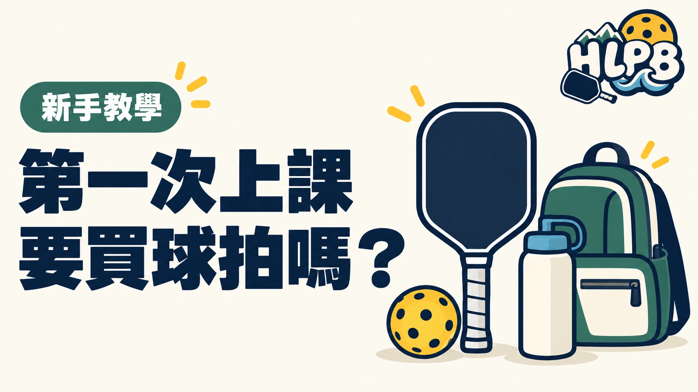

第一次上匹克球課，不一定需要先買球拍。先問主辦單位是否提供球拍與球，再決定要不要購買。 有提供器材，就能先體驗，之後再了解自己需要什麼。
| 準備項目 | 先確認什麼 |
|---|---|
| 球拍與球 | 課程是否提供？有沒有額外費用？ |
| 服裝與鞋子 | 穿著方便活動，並確認場館的鞋款要求 |
| 飲水與個人物品 | 自備飲水，依個人需求準備 |
| 集合與入場 | 正確場地、集合位置與報到方式 |
| 請假及停課 | 請假、退費及天候影響時如何通知？ |
學校內的場地，也不能因為有課程就自行進入。依課程的集合與入場安排參加，有問題先問主辦單位。
如果已經有球拍，可以先問是否適合帶來上課。還沒買的人，也不用為了第一次上課一次買齊所有配件。先了解玩法與器材差異，再挑自己用得習慣的球拍。
不確定就先問，準備不用複雜。 把器材、地點與規定確認好，第一次上課就少一點摸索。
依課程通知的集合與入場方式參加。
參考來源：USA Pickleball 教學資源
最後查證：2026-10-10｜HLPB 編輯整理，參考來源見內文
返回文章列表